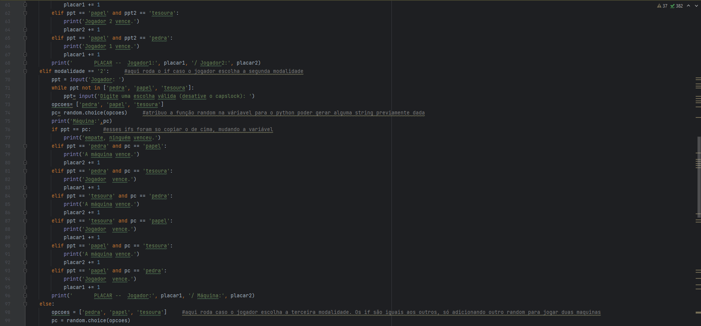
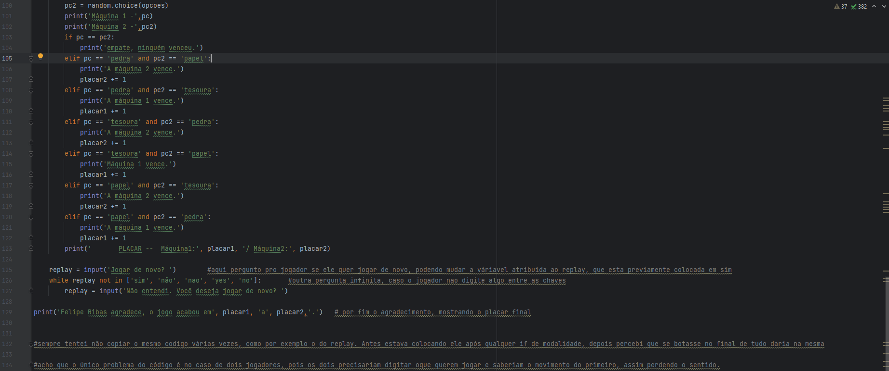

Neste trabalho, foi proposta a atividade de fazer um jogo em Python com as mesmas regras do Jokenpô
Algumas das regras escolhidas pelo professor eram:
1. O programa deve respeitar as regras do Jokenpô (Pedra ganha da tesoura / Tesoura ganha do papel
/ Papel ganha da pedra)
2. O jogo possui três modalidades: humano x humano, humano x computador ou computador x
computador. A escolha da modalidade deve ser definida no início do programa, e não pode ser
modificada ao longo da execução.
3. Após a escolha da modalidade, o jogo pode ter inúmeras partidas, ao final de cada partidas o
programa deve perguntar se o jogador quer CONTINUAR ou SAIR.
4. Em cada partida o programa deve, solicitar a jogada (PEDRA, PAPEL OU TESOURA) se o jogador for
humano ou gerar a jogada de forma randômica se o jogador for computador. Após coletar as
jogadas, o programa deve indicar quem foi o vencedor e mostrar o placar geral.
5. Caso o jogador deseje CONTINUAR, o programa deve começar mais uma partida. Caso o jogador
deseje SAIR, o programa deve exibir o placar geral e apresentar uma mensagem de agradecimento
com os nomes dos estudantes.
6. O código do programa deve estar documentado e pode ser implementado individualmente ou
duplas.
7. Os estudantes devem ter domínio sobre todo o código, poderá ser realizado um teste de autoria
nas entregas para avaliar o domínio de cada estudante. Em caso de cópia ou plágio, a nota atribuída
a atividade será zero.

Este trabalho de programação em Python me permitiu explorar conceitos fundamentais da linguagem, como estruturas de controle, repetição e condicionais, enquanto criava um jogo interativo e inteligente. Através da implementação das regras do Jokenpô e da adição de uma inteligência artificial, pude demonstrar minha habilidade em aplicar os conhecimentos de programação em um projeto prático. Além disso, desenvolver esse jogo foi uma experiência gratificante, pois me permitiu exercitar minha criatividade, lógica e capacidade de resolução de problemas. Acredito que o resultado final tenha sido uma versão interessante e desafiadora do Jokenpô, que proporcionará diversão para os jogadores. Este trabalho reforçou meu amor pela programação e me motivou a continuar explorando novas possibilidades na área. Através de projetos como esse, posso aprimorar minhas habilidades e contribuir para a criação de soluções criativas e inovadoras utilizando a linguagem de programação Python.